Unlocking single cell spatial omics analyses with scdney
Source:vignettes/scdneySpatial.Rmd
scdneySpatial.Rmd
knitr::knit_hooks$set(time_it = local({
now <- NULL
function(before, options) {
if (before) {
# record the current time before each chunk
now <<- Sys.time()
} else {
# calculate the time difference after a chunk
res <- difftime(Sys.time(), now, units = "secs")
# return a character string to show the time
paste("Time for this code chunk to run:", round(res,
2), "seconds")
}
}
}))Presenting Authors
Farhan Ameen, Alex Qin, Shreya Rao, Ellis Patrick.
Westmead Institute for Medical Research, University of Sydney,
Australia
Sydney Precision Data Science Centre, University of Sydney,
Australia
School of Mathematics and Statistics, University of Sydney,
Australia
Contact: ellis.patrick@sydney.edu.au
Overview
Understanding the interplay between different types of cells and their immediate environment is critical for understanding the mechanisms of cells themselves and their function in the context of human diseases. Recent advances in high dimensional in situ cytometry technologies have fundamentally revolutionized our ability to observe these complex cellular relationships providing an unprecedented characterisation of cellular heterogeneity in a tissue environment.
Description
In this workshop we will introduce some of the key analytical concepts needed to analyse data from high dimensional spatial omics technologies such as, PhenoCycler, IMC, Xenium and MERFISH. We will show how functionality from our Bioconductor packages simpleSeg, FuseSOM, scClassify, scHot, spicyR, listClust, statial, scFeatures and ClassifyR can be used to address various biological hypotheses. By the end of this workshop attendees will be able to implement and assess some of the key steps of a spatial analysis pipeline including cell segmentation, feature normalisation, cell type identification, microenvironment and cell-state characterisation, spatial hypothesis testing and patient classification. Understanding these key steps will provide attendees with the core skills needed to interrogate the comprehensive spatial information generated by these exciting new technologies.
Pre-requisites
It is expected that students will have:
- basic knowledge of R syntax,
- this workshop will not provide an in-depth description of cell-resolution spatial omics technologies.
R / Bioconductor packages used
Several single cell R packages will be used from the scdney package, for more information visit: https://sydneybiox.github.io/scdney/.
Learning objectives
- Understand and visualise spatial omics datasets.
- Identify key biological questions that can be addressed with these technologies and spatial analysis.
- Understand the key analytical steps involved in spatial omics analysis, and perform these steps using R.
- Evaluate the performance of data normalisation and cell segmentation.
- Understand and generate individual feature representations from spatial omics data.
- Develop appreciation on how to assess performance of classification models.
- Perform disease outcome prediction using the feature representation and robust classification framework.
Context
In the following we will re-analyse some IMC data (Ferguson et al, 2022) profiling the spatial landscape of head and neck cutaneous squamous cell carcinomas (HNcSCC), the second most common type of skin cancer. The majority of HNcSCC can be treated with surgery and good local control, but a subset of large tumours infiltrate subcutaneous tissue and are considered high risk for local recurrence and metastases. The key conclusion of this manuscript (amongst others) is that spatial information about cells and the immune environment can be used to predict primary tumour progression or metastases in patients. We will use our spicy workflow to reach a similar conclusion.
Setup
Installation
if (!requireNamespace("BiocManager", quietly = TRUE)) {
install.packages("BiocManager")
}
BiocManager::install(c( "simpleSeg", "cytomapper", "scClassify", "scHOT", "FuseSOM","glmnet", "spicyR", "lisaClust","Statial", "scFeatures", "ClassifyR", "tidyverse", "scater", "SingleCellExperiment", "STexampleData", "SpatialDatasets", "tidySingleCellExperiment", "scuttle", "batchelor"))Time for this code chunk to run: 0 seconds
Load packages
# packages from scdney
library(scdneySpatialBiocAsia2024)
library(SpatialDatasets)
library(simpleSeg)
library(FuseSOM)
library(lisaClust)
library(spicyR)
library(Statial)
library(ClassifyR)
# Other required packages
library(tidySingleCellExperiment)
library(tidyverse)
library(SingleCellExperiment)
library(cytomapper)
library(scater)
library(glmnet)
library(knitr)
theme_set(theme_classic())
nCores <- 8 # Feel free to parallelise things if you have the cores to spare.
BPPARAM <- simpleSeg:::generateBPParam(nCores)
source(system.file("extdata", "utils.R", package = "scdneySpatialBiocAsia2024"))
options("restore_SingleCellExperiment_show" = TRUE)Time for this code chunk to run: 7.67 seconds
Download images
Feel free to follow along for this section. Much of the segmentation pipeline is computationally demanding, and most likely won’t be able to run on the Bioconductor Galaxy servers.
# Reads images to cache in a directory specified by the pathToImages variable.
pathToImages <- SpatialDatasets::Ferguson_Images()
tmp <- tempfile() # Creates a temporary directory.
unzip(pathToImages, exdir = tmp) # Unzips files to the temporary directory.
# Store images in a CytoImageList on_disk as h5 files to save memory.
images <- cytomapper::loadImages(
tmp, # Read files from the temporary directory.
single_channel = TRUE,
on_disk = TRUE,
h5FilesPath = HDF5Array::getHDF5DumpDir(),
BPPARAM = BPPARAM
)
mcols(images) <- S4Vectors::DataFrame(imageID = names(images))Time for this code chunk to run: 0 seconds
# Clean channel names
cn <- channelNames(images) # Read in channel names
head(cn)
cn <- sub(".*_", "", cn) # Remove preceding letters
cn <- sub(".ome", "", cn) # Remove the .ome
head(cn)
channelNames(images) <- cn # Reassign channel namesTime for this code chunk to run: 0 seconds
# Clean image names
head(names(images))
nam <- sapply(strsplit(names(images), "_"), `[`, 3)
head(nam)
names(images) <- nam # Reassigning image names
mcols(images)[["imageID"]] <- nam # Reassigning image namesTime for this code chunk to run: 0 seconds
SimpleSeg: Segmentation
Run simpleSeg
If your images are stored in a list or
CytoImageList they can be segmented with a simple call to
simpleSeg(). To summarise, simpleSeg() is an R
implementation of a simple segmentation technique which traces out the
nuclei using a specified channel using nucleus then dilates
around the traced nuclei by a specified amount using
discSize. The nucleus can be traced out using either one
specified channel, or by using the principal components of all channels
most correlated to the specified nuclear channel by setting
pca = TRUE.
In the particular example below, we have asked simpleSeg
to do the following:
By setting nucleus = c("HH3"), we’ve asked simpleSeg to
trace out the nuclei signal in the images using the HH3 channel. By
setting pca = TRUE, simpleSeg segments out the nuclei mask
using a principal component analysis of all channels and using the
principal components most aligned with the nuclei channel, in this case,
HH3. By setting cellBody = "dilate", simpleSeg uses a
dilation strategy of segmentation, expanding out from the nucleus by a
specified discSize. By setting discSize = 3,
simpleSeg dilates out from the nucleus by 3 pixels. By setting
sizeSelection = 20, simpleSeg ensures that only cells with
a size greater than 20 pixels will be used. By setting
transform = "sqrt", simpleSeg square root transforms each
of the channels prior to segmentation. By setting
tissue = c("panCK", "CD45", "HH3"), we specify a tissue
mask which simpleSeg uses, filtering out all background noise outside
the tissue mask. This is important as these are tumour cores, wand hence
circular, so we’d want to ignore background noise which happens outside
of the tumour core.
There are many other parameters that can be specified in simpleSeg
(smooth, watershed, tolerance,
and ext), and we encourage the user to select the best
parameters which suit their biological context.
masks <- simpleSeg(images,
nucleus = c("HH3"),
pca = TRUE,
cellBody = "dilate",
discSize = 3,
sizeSelection = 20,
transform = "sqrt",
tissue = c("panCK", "CD45", "HH3"),
cores = nCores
)Time for this code chunk to run: 0 seconds
Visualise outlines
The plotPixels function in cytomapper makes
it easy to overlay the mask on top of the nucleus intensity marker to
see how well our segmentation process has performed. Here we can see
that the segmentation appears to be performing reasonably.
If you see over or under-segmentation of your images,
discSize is a key parameter in simpleSeg() for
optimising the size of the dilation disc after segmenting out the
nuclei.
plotPixels(image = images["F3"],
mask = masks["F3"],
img_id = "imageID",
colour_by = c("HH3"),
display = "single",
colour = list(HH3 = c("black","blue")),
legend = NULL,
bcg = list(
HH3 = c(1, 1, 2)
))Time for this code chunk to run: 0 seconds
 Time
for this code chunk to run: 0.02 seconds
Time
for this code chunk to run: 0.02 seconds
If you wish to visualise multiple markers instead of just the HH3
marker and see how the segmentation mask performs, this can also be
done. Here, we can see that our segmentation mask has done a good job of
capturing the CD31 signal, but perhaps not such a good job of capturing
the FXIIIA signal, which often lies outside of our dilated nuclear mask.
This could suggest that we might need to increase the
discSize of our dilation.
plotPixels(image = images["F3"],
mask = masks["F3"],
img_id = "imageID",
colour_by = c("HH3", "CD31", "FX111A"),
display = "single",
colour = list(HH3 = c("black","blue"),
CD31 = c("black", "red"),
FX111A = c("black", "green") ),
legend = NULL,
bcg = list(
HH3 = c(1, 1, 2),
CD31 = c(0, 1, 2),
FX111A = c(0, 1, 1.5)
))Time for this code chunk to run: 0 seconds
 Time
for this code chunk to run: 0.01 seconds
Time
for this code chunk to run: 0.01 seconds
Questions
- Is there any information we’re not capturing with this segmentation?
- What parameters might you change to improve the segmentation?
- What are some intrinsic limitations of the simpleSeg method?
In order to characterise the phenotypes of each of the segmented
cells, measureObjects() from cytomapper will
calculate the average intensity of each channel within each cell as well
as a few morphological features. By default, the
measureObjects() function will return a
SingleCellExperiment object, where the channel intensities
are stored in the counts assay and the spatial location of
each cell is stored in colData in the m.cx and
m.cy columns.
However, you can also specify measureObjects() to return
a SpatialExperiment object by specifying
return_as = "spe". As a SpatialExperiment
object, the spatial location of each cell is stored in the
spatialCoords slot, as m.cx and
m.cy, which simplifies plotting. In this demonstration, we
will return a SpatialExperiment object.
# Summarise the expression of each marker in each cell
cells <- cytomapper::measureObjects(masks,
images,
img_id = "imageID",
return_as = "spe",
BPPARAM = BPPARAM)
spatialCoordsNames(cells) <- c("x", "y")Time for this code chunk to run: 0 seconds
Next, to associate features in our image with disease progression, it
is important to read in information which links image identifiers to
their progression status. We will do this here, making sure that our
imageID column matches.
clinical <- read.csv(
system.file(
"extdata/clinicalData_TMA1_2021_AF.csv",
package = "scdneySpatialBiocAsia2024"
)
)
rownames(clinical) <- clinical$imageID
clinical <- clinical[names(images), ]
colData(cells) <- cbind(colData(cells), clinical[cells$imageID, ])Time for this code chunk to run: 0 seconds
simpleSeg: Normalisation
We’ve made it easy to follow on from the normalisation section. Our
SpatialDatasets package has the segmented SCE file stored
in the function spe_Ferguson_2022().
#Download data now
cells = SpatialDatasets::spe_Ferguson_2022()
cells$x = spatialCoords(cells)[, "x"]
cells$y = spatialCoords(cells)[, "y"]Time for this code chunk to run: 9.99 seconds
Normalise the data
We should check to see if the marker intensities of each cell require
some form of transformation or normalisation. The reason we do this is
two-fold:
1) The intensities of images are often highly skewed, preventing any
meaningful downstream analysis.
2) The intensities across different images are often different, meaning
that what is considered “positive” can be different across images.
By transforming and normalising the data, we aim to reduce these two
effects. Here we extract the intensities from the counts
assay. Looking at CD3 which should be expressed in the majority of the T
cells, the intensities are clearly very skewed, and it is difficult to
see what is considered a CD3- cell, and what is a CD3+ cell.
# Plot densities of CD3 for each image.
cells |>
join_features(features = rownames(cells), shape = "wide", assay = "counts") |>
ggplot(aes(x = CD3, colour = imageID)) +
geom_density() +
theme(legend.position = "none")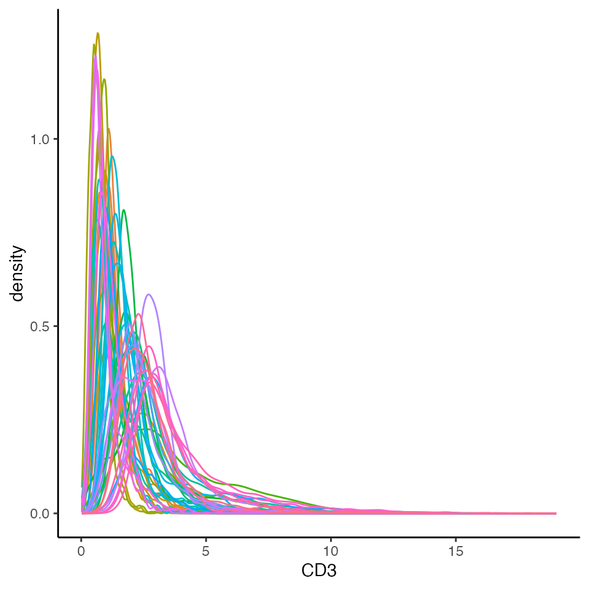Time for this code chunk to run: 1.26 seconds
Questions
Can we see what is a CD3+ vs a CD3- cell here?
Dimension reduction and visualisation
As our data is stored in a SpatialExperiment we can also
use scater to perform and visualise our data in a lower
dimension to look for batch effects in our images. We can see that
before normalisation, our UMAP shows a clear batch effect between
images.
# Usually we specify a subset of the original markers which are informative to separating out distinct cell types for the UMAP and clustering.
ct_markers <- c("podoplanin", "CD13", "CD31",
"panCK", "CD3", "CD4", "CD8a",
"CD20", "CD68", "CD16", "CD14", "HLADR", "CD66a")
set.seed(51773)
# Perform dimension reduction using UMAP.
cells <- scater::runUMAP(
cells,
subset_row = ct_markers,
exprs_values = "counts"
)
# Select a subset of images to plot.
someImages <- unique(cells$imageID)[c(1, 5, 10, 20, 30, 40)]
# UMAP by imageID.
scater::plotReducedDim(
cells[, cells$imageID %in% someImages],
dimred = "UMAP",
colour_by = "imageID"
)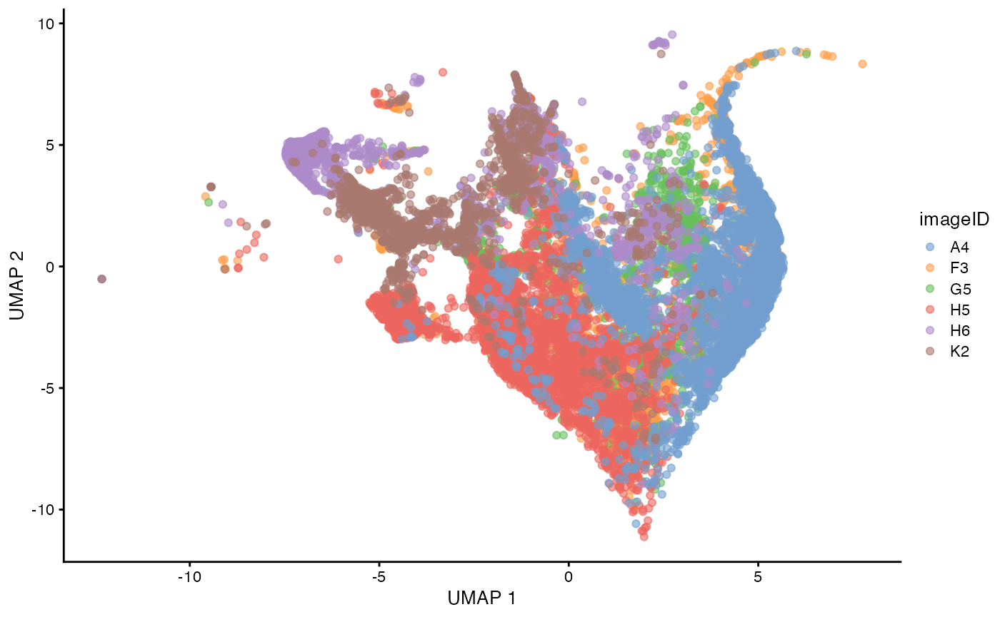Time for this code chunk to run: 41.35 seconds
We can transform and normalise our data using the
normalizeCells function. In the
normalizeCells() function, we specify the following
parameters. transformation is an optional argument which
specifies the function to be applied to the data. We do not apply an
arcsinh transformation here, as we already apply a square root transform
in the simpleSeg() function.
method = c("trim99", "mean", PC1") is an optional argument
which specifies the normalisation method/s to be performed. Here, we: 1)
Trim the 99th percentile 2) Divide by the mean 3) Remove the 1st
principal component assayIn = "counts" is a required
argument which specifies what the assay you’ll be taking the intensity
data from is named. In our context, this is called
counts.
This modified data is then stored in the norm assay by
default. We can see that this normalised data appears more bimodal, not
perfectly, but likely to a sufficient degree for clustering, as we can
at least observe a clear CD3+ peak at 1.00, and a CD3- peak at around
0.3.
# Leave out the nuclei markers from our normalisation process.
useMarkers <- rownames(cells)[!rownames(cells) %in% c("DNA1", "DNA2", "HH3")]
# Transform and normalise the marker expression of each cell type.
cells <- simpleSeg::normalizeCells(cells,
markers = useMarkers,
transformation = NULL,
method = c("trim99", "mean", "PC1"),
assayIn = "counts",
cores = nCores
)
# Plot densities of CD3 for each image
cells |>
join_features(features = rownames(cells), shape = "wide", assay = "norm") |>
ggplot(aes(x = CD3, colour = imageID)) +
geom_density() +
theme(legend.position = "none")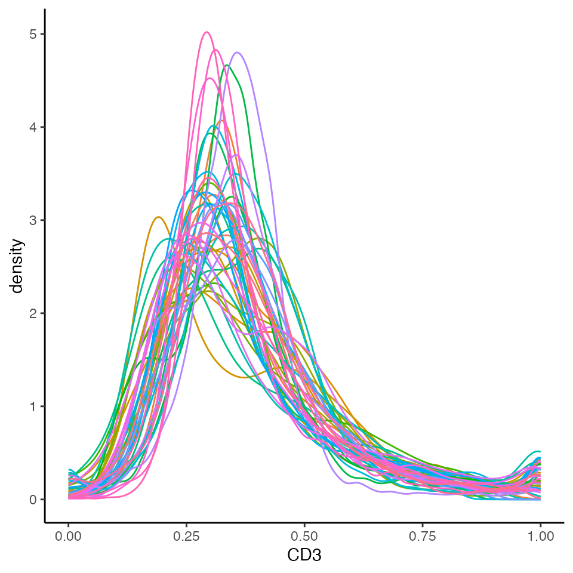Time for this code chunk to run: 3.84 seconds
Questions
Can we see what is a CD3+ vs a CD3- cell here?
set.seed(51773)
# Perform dimension reduction using UMAP.
cells <- scater::runUMAP(
cells,
subset_row = ct_markers,
exprs_values = "norm",
name = "normUMAP"
)
someImages <- unique(cells$imageID)[c(1, 5, 10, 20, 30, 40)]
# UMAP by imageID.
scater::plotReducedDim(
cells[, cells$imageID %in% someImages],
dimred = "normUMAP",
colour_by = "imageID"
)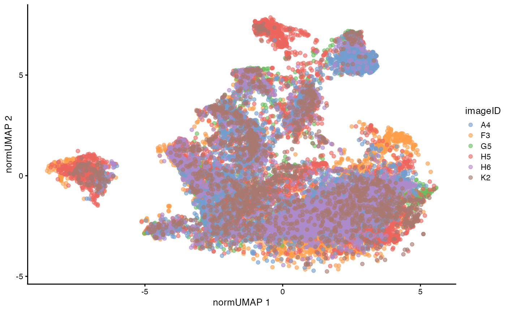Time for this code chunk to run: 41.28 seconds
Questions
- What are we hoping to achieve with normalisation?
- What has changed between the pre-normalisation and post-normalisation correction UMAP?
FuseSOM
FuseSOM Package FuseSOM Article
To dissect more information about cell interactions with each other,
and cell-specific differences between groups, we next perform
clustering. The runFuseSOM() function from the
FuseSOM package conveniently runs clustering on any
SingleCellExperiment object, by specifying the number of
clusters under numClusters.
# Set seed.
set.seed(51773)
# Generate SOM and cluster cells into 10 groups
cells <- runFuseSOM(
cells,
markers = ct_markers,
assay = "norm",
numClusters = 10
)Time for this code chunk to run: 2.04 seconds
We can also observe how reasonable our choice of k = 10
was, using the estimateNumCluster() and
optiPlot() functions. Here we examine the Gap method, but
others such as Silhouette and Within Cluster Distance are also
available. We can see that there are elbow points in the gap statistic
at k = 7, k = 10, and k = 11.
We’ve specified k = 10, striking a good balance between the
number of clusters and the gap statistic.
cells <- estimateNumCluster(cells, kSeq = 2:30)
optiPlot(cells, method = "gap")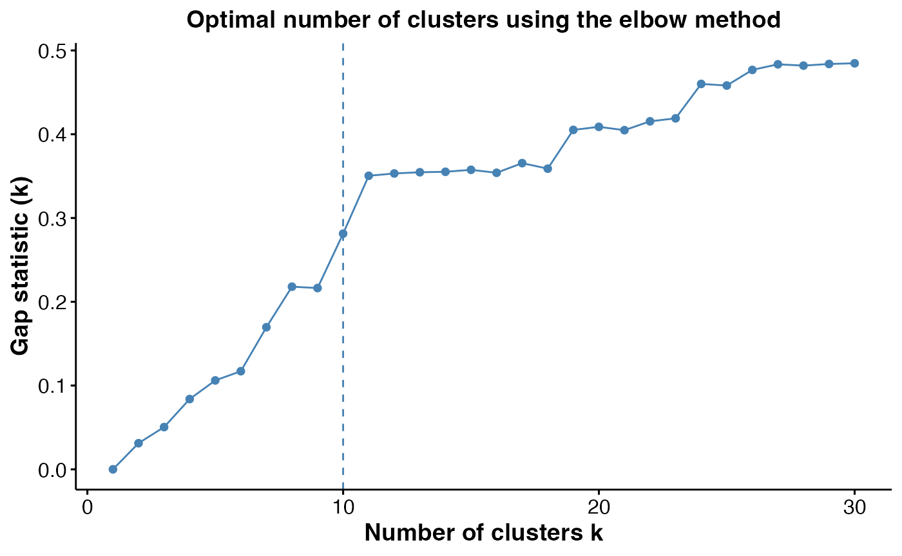Time for this code chunk to run: 0.67 seconds
Questions
- Was our choice of
k = 10a good choice? - What other
kmight have made sense? - From a biological perspective, what would increasing
kdo?
Attempt to interpret the phenotype of each cluster
We can begin the process of understanding what each of these cell
clusters are by using the plotGroupedHeatmap function from
scater. At the least, here we can see we capture all the
major immune populations that we expect to see, including the CD4 and
CD8 T cells, the CD20+ B cells, the CD68+ myeloid populations, the CD66+
granulocytes, the podoplanin+ epithelial cells, and the panCK+ tumour
cells.
# Visualise marker expression in each cluster.
scater::plotGroupedHeatmap(
cells,
features = ct_markers,
group = "clusters",
exprs_values = "norm",
center = TRUE,
scale = TRUE,
zlim = c(-3, 3),
cluster_rows = FALSE,
block = "clusters"
)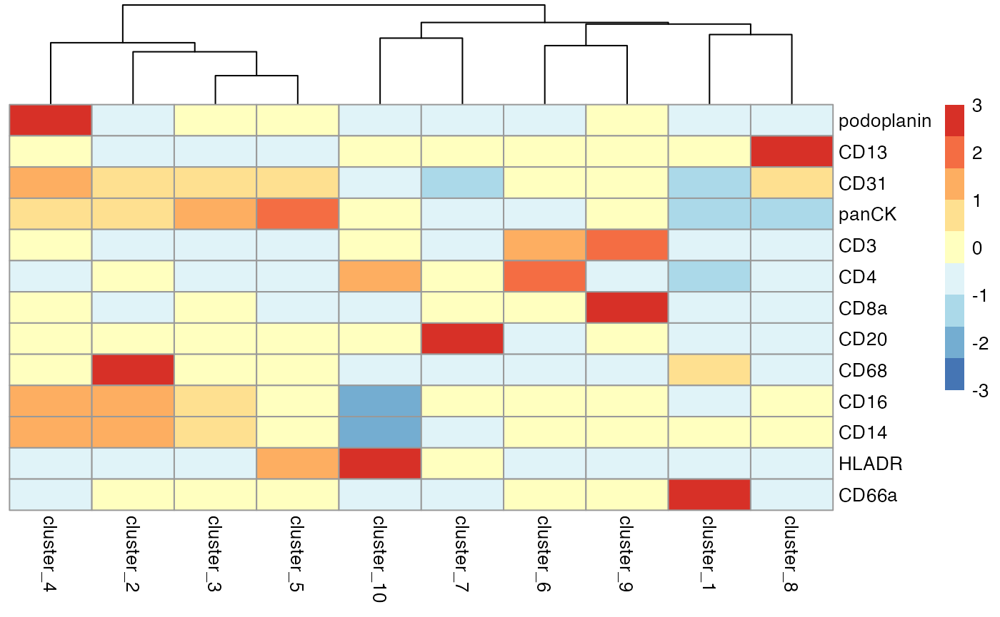Time for this code chunk to run: 0.28 seconds
Given domain-specific knowledge of the tumour-immune landscape, we can go ahead and annotate these clusters as cell types given their expression profiles.
cells <- cells |>
mutate(cellType = case_when(
clusters == "cluster_1" ~ "GC", # Granulocytes
clusters == "cluster_2" ~ "MC", # Myeloid cells
clusters == "cluster_3" ~ "SC", # Squamous cells
clusters == "cluster_4" ~ "EP", # Epithelial cells
clusters == "cluster_5" ~ "SC", # Squamous cells
clusters == "cluster_6" ~ "TC_CD4", # CD4 T cells
clusters == "cluster_7" ~ "BC", # B cells
clusters == "cluster_8" ~ "EC", # Endothelial cells
clusters == "cluster_9" ~ "TC_CD8", # CD8 T cells
clusters == "cluster_10" ~ "DC" # Dendritic cells
))Time for this code chunk to run: 0.2 seconds
We might also be interested in how these cell types are distributed on the images themselves. Here we examine the distribution of clusters on image F3, noting the healthy epithelial and endothelial structures surrounded by tumour cells.
reducedDim(cells, "spatialCoords") <- spatialCoords(cells)
cells |>
filter(imageID == "F3") |>
plotReducedDim("spatialCoords", colour_by = "cellType")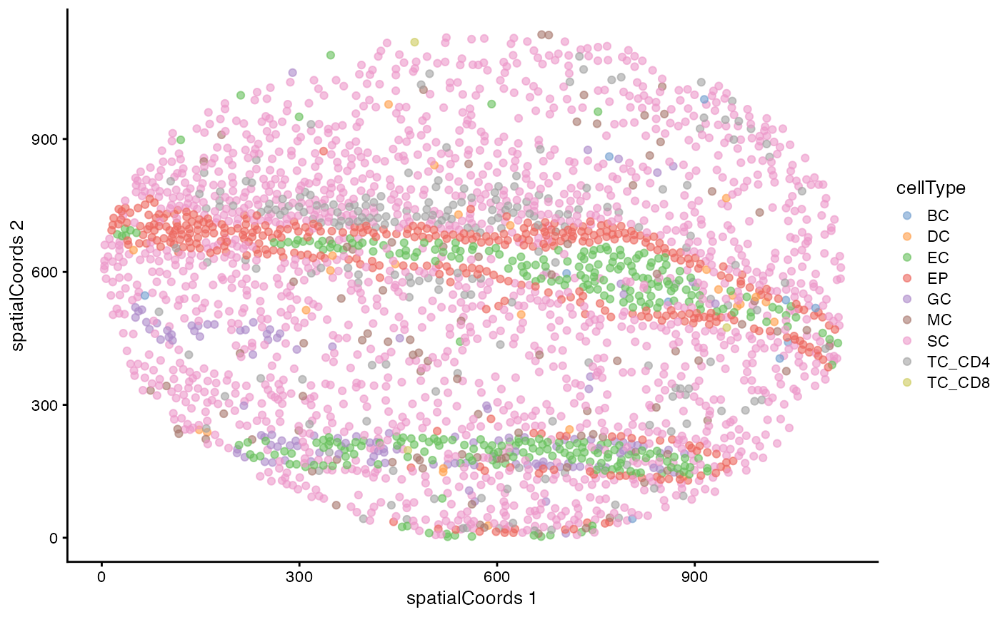Time for this code chunk to run: 0.35 seconds
We find it always useful to check the number of cells in each cluster.
#>
#> DC BC MC GC TC_CD8 TC_CD4 EC EP SC
#> 2411 4322 5283 7993 8534 11753 14159 14170 87288Time for this code chunk to run: 0.01 seconds
Questions
- Does our distribution of cell types make sense?
- What would we normally expect as the most expressed cell type and the least expressed cell type for this dataset?
We can also use the UMAP we computed earlier to visualise our data in a lower dimension and see how well our annotated cell types cluster out.
# UMAP by cell type
scater::plotReducedDim(
cells[, cells$imageID %in% someImages],
dimred = "normUMAP",
colour_by = "cellType"
)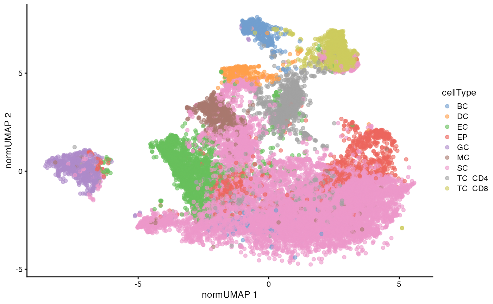Time for this code chunk to run: 0.54 seconds
spicyR: Test spatial relationships
spicyR uses the L-function to determine localisation or dispersion
between cell types. The L-function measures attraction or dispersion
between cell types, with larger values (> 0) suggesting increased
attraction, and lower values (< 0) suggesting avoidance between cell
types. We specify a range of radii to calculate the L-function over and
set sigma = 50 to account for tissue inhomogeneity.
spicyTest <- spicy(cells,
condition = "group",
cellTypeCol = "cellType",
imageIDCol = "imageID",
Rs = 1:10*10,
sigma = 50,
BPPARAM = BPPARAM)Time for this code chunk to run: 0 seconds
Questions 1. What does an L-function value of 0
suggest? 2. How would you choose the optimal radii (Rs) for
a given dataset?
To save time we have saved the output of the above code.
load(system.file("extdata", "spicyTest.rda", package = "scdneySpatialBiocAsia2024"))
topPairs(spicyTest, n = 10)#> intercept coefficient p.value adj.pvalue from to
#> BC__EC -1.1346644 8.304020 0.03391529 0.6931721 BC EC
#> EC__BC -1.5909700 7.919971 0.04134661 0.6931721 EC BC
#> GC__TC_CD4 -7.6316673 11.005639 0.05047096 0.6931721 GC TC_CD4
#> TC_CD4__GC -7.5406782 11.077602 0.05709461 0.6931721 TC_CD4 GC
#> TC_CD4__EP -0.7117393 4.853317 0.07261120 0.6931721 TC_CD4 EP
#> EP__TC_CD4 -0.7070918 4.820661 0.07510118 0.6931721 EP TC_CD4
#> EP__TC_CD8 -3.1445464 5.779536 0.08047994 0.6931721 EP TC_CD8
#> TC_CD8__EP -2.9313474 5.688420 0.09522058 0.6931721 TC_CD8 EP
#> TC_CD4__EC 3.1984391 4.366122 0.09716499 0.6931721 TC_CD4 EC
#> EC__TC_CD4 3.1052061 4.263971 0.10461424 0.6931721 EC TC_CD4Time for this code chunk to run: 0.01 seconds
We can visualise these tests using the signifPlot
function.
# Visualise which relationships are changing the most.
signifPlot(spicyTest,
fdr = TRUE)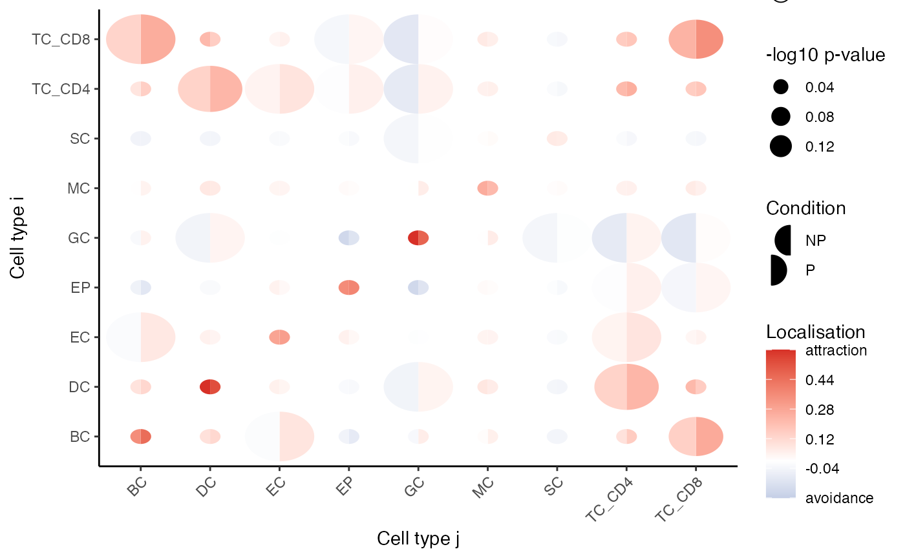Time for this code chunk to run: 0.21 seconds
Questions 1. Which cell types appear to have significant co-localistion/dispersion? 2. Does this align with what we might expect to see in a biological context?
spicyR also has functionality for plotting out
individual pairwise relationships.
spicyBoxPlot(spicyTest,
from = "BC",
to = "EC")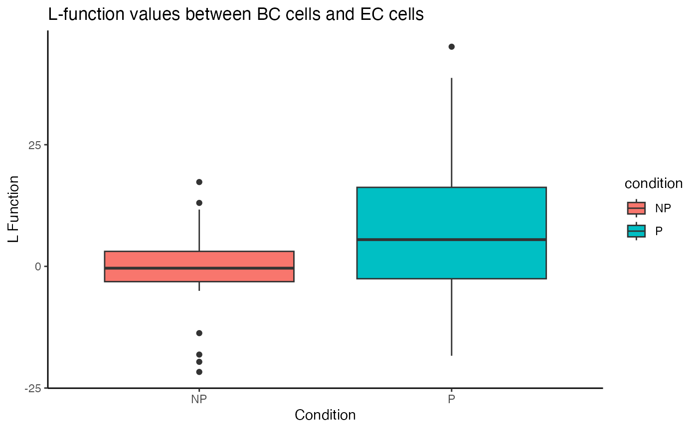Time for this code chunk to run: 0.1 seconds
Alternatively, we can look at the most differentially localised
relationship between progressors and non-progressors by specifying
rank = 1.
spicyBoxPlot(spicyTest,
rank = 1) Time
for this code chunk to run: 0.08 seconds
Time
for this code chunk to run: 0.08 seconds
lisaClust: Find cellular neighbourhoods
lisaClust Package lisaClust paper
lisaClust allows us to identify regions where spatial
associations between cell types is similar. Here we use the
lisaClust function to clusters cells into 5 regions with
distinct spatial ordering.
set.seed(51773)
cells <- lisaClust(
cells,
k = 5,
sigma = 50,
cellType = "cellType",
BPPARAM = BPPARAM
)Time for this code chunk to run: 18.25 seconds
To save time the results of the above code have been saved and can be loaded in.
Region - cell type enrichment heatmap
We can interpret which spatial orderings the regions are quantifying
using the regionMap function. This plots the frequency of
each cell type in a region relative to what you would expect by
chance.
# Visualise the enrichment of each cell type in each region
regionMap(cells, cellType = "cellType", limit = c(0.2, 2))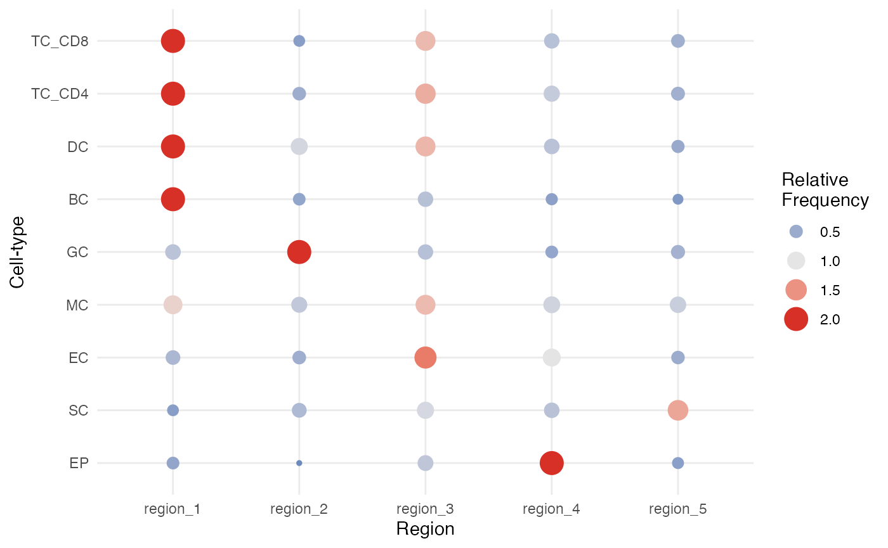Time for this code chunk to run: 0.11 seconds
Visualise regions
By default, these identified regions are stored in the
regions column in the colData of our
SpatialExperiment object. We can quickly examine the
spatial arrangement of these regions using ggplot on image
F3.
cells |>
filter(imageID == "F3") |>
plotReducedDim("spatialCoords", colour_by = "region")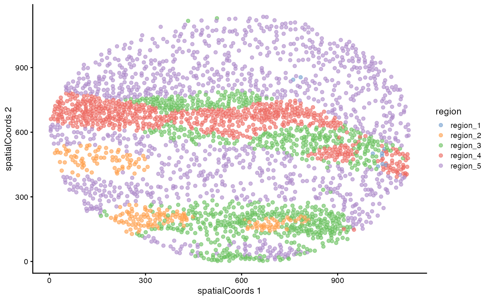Time for this code chunk to run: 0.32 seconds
While much slower, the hatchingPlot function can also be
used to view regions of co-localisation simultaneously with the cell
type calls.
# Use hatching to visualise regions and cell types.
hatchingPlot(
cells,
useImages = "F3",
cellType = "cellType",
nbp = 300
)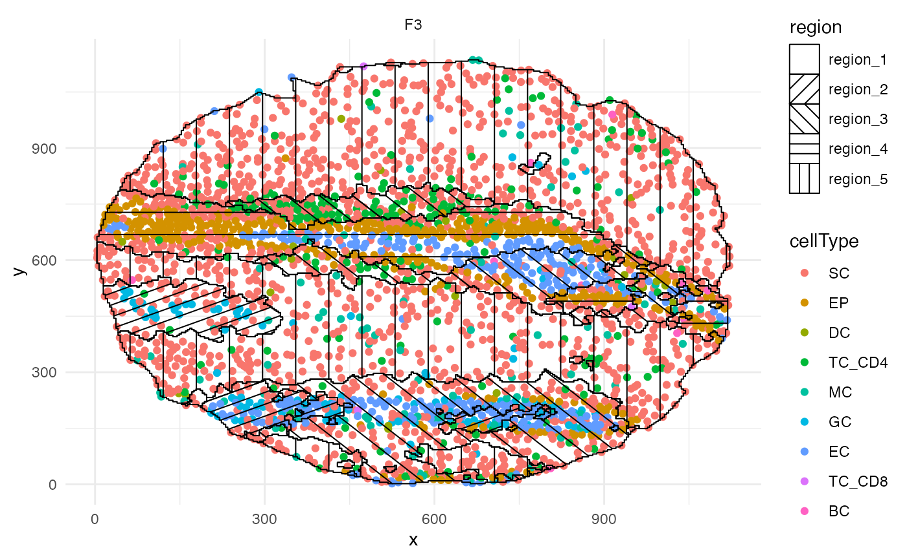Time for this code chunk to run: 27.11 seconds
Questions 1. How could the choice of k
affect our clustering results? 2. Looking at the graph above, would a
different value of k be better?
Test for association with progression
We can use the colTest function to test for associations
between the proportions of cells in each region and progression
status.
# Test if the proportion of each region is associated
# with progression status.
testRegion <- colTest(
cells,
feature = "region",
condition = "group",
type = "ttest")
testRegion#> mean in group NP mean in group P tval.t pval adjPval cluster
#> region_5 0.360 0.390 -1.40 0.16 0.45 region_5
#> region_1 0.065 0.044 1.10 0.26 0.45 region_1
#> region_2 0.048 0.033 1.10 0.27 0.45 region_2
#> region_4 0.140 0.120 0.71 0.48 0.60 region_4
#> region_3 0.390 0.410 -0.37 0.71 0.71 region_3Time for this code chunk to run: 0.11 seconds
Questions 1. How could results from
lisaClust be used in conjunction with results from
spicyR?
Statial
SpatioMark: Continuous changes in marker expression associated with varying levels of localisation.
The first step in analysing these changes is to calculate the spatial
proximity (getDistances) of each cell to every cell type.
These values will then be stored in the reducedDims slot of
the SingleCellExperiment object under the names distances.
SpatioMark also provides functionality to look into proximal cell
abundance using the getAbundance() function, which is
further explored within the Statial package vignette
cells <- getDistances(cells,
maxDist = 200,
nCores = nCores,
cellType = "cellType",
spatialCoords = c("x", "y")
)Time for this code chunk to run: 1.63 seconds
We can then visualise an example image, specified with
image = "F3" and a particular marker interaction with cell
type localisation. To visualise these changes, we specify two cell types
with the from and to parameters, and a marker
with the marker parameter (cell-cell-marker interactions).
Here, we specify the changes in the marker podoplanin in SC
as its localisation to EP increases or decreases, where we
can observe that podoplanin decreases as its distance to the dense clump
of tumour cells increases.
p <- plotStateChanges(
cells = cells,
cellType = "cellType",
spatialCoords = c("x", "y"),
type = "distances",
image = "F3",
from = "SC",
to = "EP",
marker = "podoplanin",
size = 1,
shape = 19,
interactive = FALSE,
plotModelFit = FALSE,
method = "lm"
)
p#> $image
#>
#> $scatter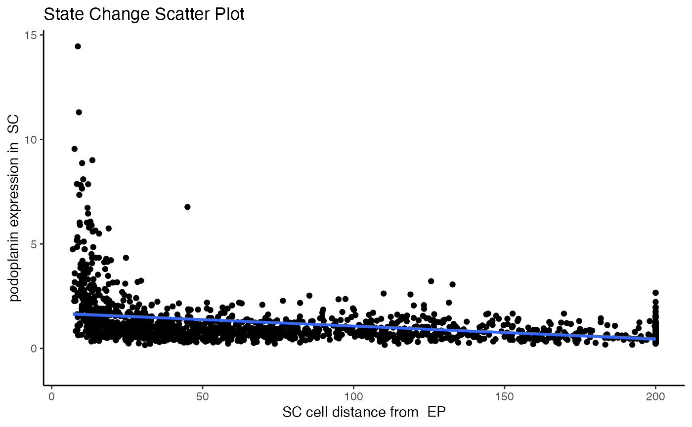 Time for this code chunk to run: 0.43 seconds
SpatioMark aims to holistically uncover all such significant
relationships by looking at all interactions across all images. The
calcStateChanges() function provided by Statial can be
expanded for this exact purpose - by not specifying cell types, a
marker, or an image, calcStateChanges() will examine the
most significant correlations between distance and marker expression
across the entire dataset.
state_dist <- calcStateChanges(
cells = cells,
cellType = "cellType",
type = "distances",
assay = 2,
nCores = nCores,
minCells = 100
)
head(state_dist[state_dist$imageID == "F3",], n = 10)#> imageID primaryCellType otherCellType marker coef tval
#> 51810 F3 SC EP podoplanin -0.0006911103 -16.90036
#> 23703 F3 EP GC CXCR3 0.0012103305 15.04988
#> 23704 F3 EP GC pSTAT3 0.0012299816 14.79933
#> 51978 F3 SC GC PDL2 0.0008802428 13.12601
#> 23669 F3 EP MC CCR7 0.0011476888 13.32900
#> 23775 F3 EP TC_CD8 CXCR3 0.0016741880 12.95156
#> 51981 F3 SC GC ICOS 0.0005186181 11.75830
#> 23696 F3 EP GC CADM1 0.0011398625 12.18028
#> 11426 F3 EC GC CD31 0.0010070252 12.40866
#> 23758 F3 EP EC TIM3 0.0033539928 12.05028
#> pval fdr
#> 51810 4.203881e-59 9.004712e-57
#> 23703 8.041089e-41 8.191646e-39
#> 23704 8.916789e-40 8.712976e-38
#> 51978 1.839014e-37 1.637728e-35
#> 23669 9.360248e-34 6.863845e-32
#> 23775 3.025912e-32 2.085497e-30
#> 51981 1.113579e-30 7.070268e-29
#> 23696 3.239532e-29 1.903862e-27
#> 11426 4.839241e-29 2.825645e-27
#> 23758 1.030900e-28 5.930114e-27Time for this code chunk to run: 1.8 seconds
The results from our SpatioMark outputs can be converted from a
data.frame to a matrix, using the
prepMatrix() function. Note, the choice of extracting
either the t-statistic or the coefficient of the linear regression can
be specified using the column = "tval" parameter, with the
coefficient being the default extracted parameter. We can see that with
SpatioMark, we get some features which are significant after adjusting
for FDR.
# Preparing outcome vector
outcome <- cells$group[!duplicated(cells$imageID)]
names(outcome) <- cells$imageID[!duplicated(cells$imageID)]
# Preparing features for Statial
distMat <- prepMatrix(state_dist)
distMat <- distMat[names(outcome), ]
# Remove some very small values
distMat <- distMat[, colMeans(abs(distMat) > 0.0001) > .8]
survivalResults <- colTest(distMat, outcome, type = "ttest")
head(survivalResults)#> mean in group NP mean in group P tval.t pval adjPval
#> EC__EC__CD13 -0.00240 -9.6e-04 -3.6 0.00086 0.27
#> SC__SC__VISTA -0.00470 -1.7e-03 -3.3 0.00190 0.27
#> SC__TC_CD4__CXCR3 -0.00015 8.8e-04 -3.4 0.00230 0.27
#> SC__EP__Ki67 -0.00037 -7.3e-05 -3.2 0.00260 0.27
#> EC__SC__CD68 0.00029 -3.9e-04 3.2 0.00300 0.27
#> SC__BC__DNA1 0.02600 -1.4e-01 3.0 0.00480 0.27
#> cluster
#> EC__EC__CD13 EC__EC__CD13
#> SC__SC__VISTA SC__SC__VISTA
#> SC__TC_CD4__CXCR3 SC__TC_CD4__CXCR3
#> SC__EP__Ki67 SC__EP__Ki67
#> EC__SC__CD68 EC__SC__CD68
#> SC__BC__DNA1 SC__BC__DNA1Time for this code chunk to run: 0.16 seconds
Kontextual
# Cluster cell type hierarchy
hierarchy <- treekoR::getClusterTree(t(assay(cells, "norm")),
clusters = cells$cellType,
hierarchy_method = "hopach")
parentList = Statial::getParentPhylo(hierarchy)
# Visualise tree
hierarchy$clust_tree |>
plot()
# Add parent 4 and 5
parentList$parent_4 = c(parentList$parent_2, parentList$parent_3)
parentList$parent_5 = c(parentList$parent_1, "EC")
all = unique(cells$cellType)
# Create data frame with all pairwise combinations of cells
treeDf = Statial::parentCombinations(all, parentList = parentList)Time for this code chunk to run: 0.84 seconds
kontext = Statial::Kontextual(
cells = cells,
cellType = "cellType",
r = 50,
parentDf = treeDf,
cores = nCores
)Time for this code chunk to run: 0 seconds
To save time we have saved the output of the results above.
load(system.file("extdata", "kontext.rda", package = "scdneySpatialBiocAsia2024"))Time for this code chunk to run: 0.01 seconds
We can use the spicyR::spicy to test for associations
between the Kontextual values and progression status. To do
so we use the alternateResult argument.
# Converting Kontextual result into data matrix
kontextMat <- Statial::prepMatrix(kontext)
# Replace NAs with 0
kontextMat[is.na(kontextMat)] <- 0
# Test association with outcome
kontextOutcome = spicyR::spicy(
cells = cells,
alternateResult = kontextMat,
condition = "group",
BPPARAM = BPPARAM
)
# Plot results
signifPlot(kontextOutcome)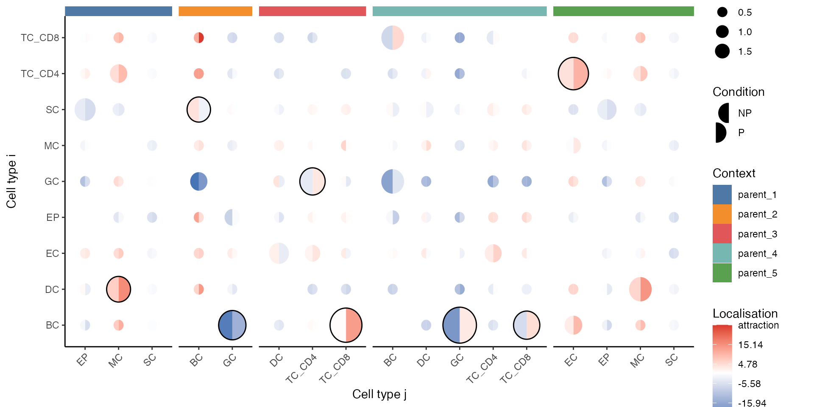Time for this code chunk to run: 3.95 seconds
Questions
- Compare this plot to the spicyR results previously using
signifPlot(spicyTest), how do Kontextual results compare to spicyR? - What are the interpretation differences between spicyR and Kontextual?
- Use the
plotKontextual()function to visualise some relationships (example below), is there anything that strikes out to you?
spicyR::signifPlot(spicyTest)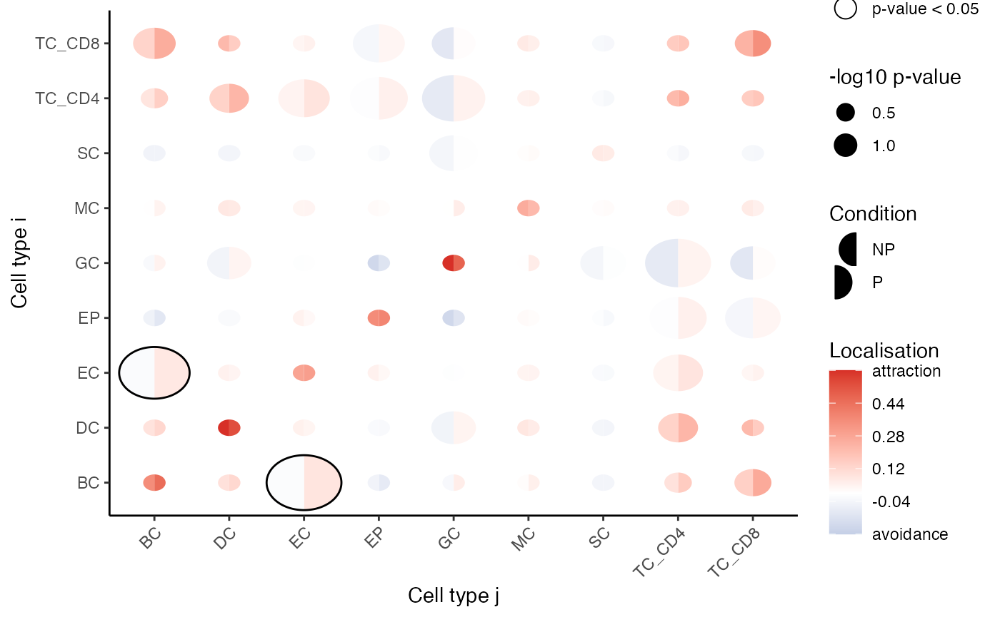
relationship = "TC_CD4__EC__parent_5"
image = "G4"
kontext |>
filter(test == relationship)#> imageID test original kontextual r inhomL
#> 1 A2 TC_CD4__EC__parent_5 7.68160860 6.5066053 50 FALSE
#> 2 A3 TC_CD4__EC__parent_5 2.23350953 3.4434658 50 FALSE
#> 3 A4 TC_CD4__EC__parent_5 -0.08701334 6.3304807 50 FALSE
#> 4 A5 TC_CD4__EC__parent_5 -0.57639962 4.5311090 50 FALSE
#> 5 A6 TC_CD4__EC__parent_5 10.02403012 7.5150350 50 FALSE
#> 6 B1 TC_CD4__EC__parent_5 10.87585261 14.2134530 50 FALSE
#> 7 B2 TC_CD4__EC__parent_5 5.06002008 5.9931607 50 FALSE
#> 8 B21 TC_CD4__EC__parent_5 -0.39959694 0.1112766 50 FALSE
#> 9 B3 TC_CD4__EC__parent_5 5.23542623 8.0275823 50 FALSE
#> 10 B4 TC_CD4__EC__parent_5 -0.66071472 -0.1844264 50 FALSE
#> 11 B6 TC_CD4__EC__parent_5 9.16587133 8.8867521 50 FALSE
#> 12 C1 TC_CD4__EC__parent_5 9.40908266 8.2981051 50 FALSE
#> 13 C2 TC_CD4__EC__parent_5 11.04803399 2.7263300 50 FALSE
#> 14 C3 TC_CD4__EC__parent_5 9.22058958 9.5992764 50 FALSE
#> 15 C4 TC_CD4__EC__parent_5 13.43380132 5.4622749 50 FALSE
#> 16 D2 TC_CD4__EC__parent_5 10.12907090 12.3327148 50 FALSE
#> 17 D3 TC_CD4__EC__parent_5 42.43221968 19.7863298 50 FALSE
#> 18 D4 TC_CD4__EC__parent_5 6.50868799 5.7006945 50 FALSE
#> 19 D5 TC_CD4__EC__parent_5 9.78058152 8.1404195 50 FALSE
#> 20 D6 TC_CD4__EC__parent_5 4.28348294 7.1094799 50 FALSE
#> 21 E1 TC_CD4__EC__parent_5 14.76511580 2.7278164 50 FALSE
#> 22 F3 TC_CD4__EC__parent_5 -14.09044015 -17.7783051 50 FALSE
#> 23 F4 TC_CD4__EC__parent_5 -15.53759618 -18.9689276 50 FALSE
#> 24 F5 TC_CD4__EC__parent_5 -12.86245147 -14.6367869 50 FALSE
#> 25 G4 TC_CD4__EC__parent_5 -2.39530472 2.3617033 50 FALSE
#> 26 G5 TC_CD4__EC__parent_5 5.51623888 10.5583310 50 FALSE
#> 27 G6 TC_CD4__EC__parent_5 4.33164604 4.7053925 50 FALSE
#> 28 H1 TC_CD4__EC__parent_5 1.94802803 7.4361377 50 FALSE
#> 29 H2 TC_CD4__EC__parent_5 13.35930713 13.0588006 50 FALSE
#> 30 H3 TC_CD4__EC__parent_5 1.34443428 5.0182459 50 FALSE
#> 31 H4 TC_CD4__EC__parent_5 7.54306921 3.3522477 50 FALSE
#> 32 H5 TC_CD4__EC__parent_5 -5.21413323 -0.9181290 50 FALSE
#> 33 H6 TC_CD4__EC__parent_5 1.66543198 5.6357928 50 FALSE
#> 34 I1 TC_CD4__EC__parent_5 2.68026706 9.4393784 50 FALSE
#> 35 I2 TC_CD4__EC__parent_5 9.77724059 16.0998082 50 FALSE
#> 36 I3 TC_CD4__EC__parent_5 33.93318280 7.6225714 50 FALSE
#> 37 I4 TC_CD4__EC__parent_5 32.63243351 19.1496354 50 FALSE
#> 38 I5 TC_CD4__EC__parent_5 25.11060806 9.8891406 50 FALSE
#> 39 J3 TC_CD4__EC__parent_5 23.47187850 23.5485701 50 FALSE
#> 40 J4 TC_CD4__EC__parent_5 23.69363791 22.2011439 50 FALSE
#> 41 J5 TC_CD4__EC__parent_5 6.56434930 5.9825165 50 FALSE
#> 42 J6 TC_CD4__EC__parent_5 2.98025405 2.9704760 50 FALSE
#> 43 K1 TC_CD4__EC__parent_5 -1.60932447 0.2013516 50 FALSE
#> 44 K2 TC_CD4__EC__parent_5 4.00813298 4.2639758 50 FALSE
# Function from inst/extdata/utils.R file
plotKontextual(relationship, imageChoose = image)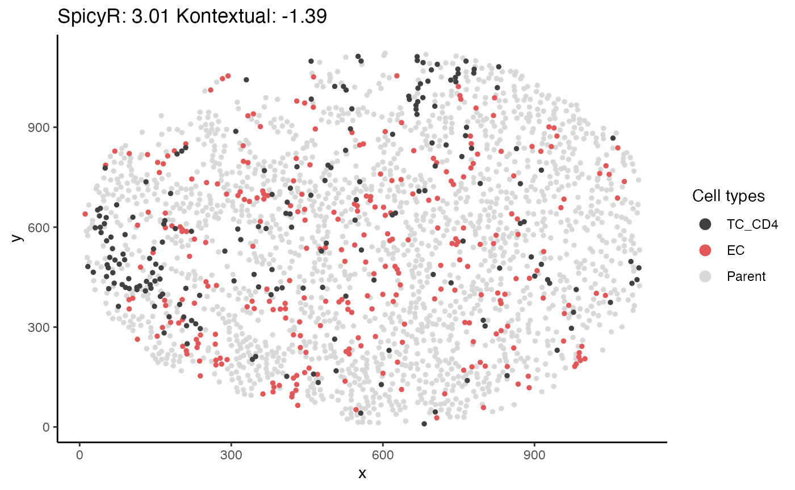Time for this code chunk to run: 0.38 seconds
ClassifyR: Patient classification
Our ClassifyR package formalises a convenient framework for
evaluating classification in R. We provide functionality to easily
include four key modelling stages; Data transformation, feature
selection, classifier training and prediction; into a cross-validation
loop. Here we use the crossValidate function to perform 50
repeats of 5-fold cross-validation to evaluate the performance of a
model (classifier) with feature selection
(selectionMethod) applied to five quantifications of our
IMC data; 1) Cell type proportions 2) Cell type localisation from
spicyR 3) Region proportions from lisaClust 4)
Cell type localisation in reference to a parent cell type from
Kontextual 5) Cell changes in response to proximal changes
from SpatioMark
# Create list to store data.frames
data <- list()
# Add proportions of each cell type in each image
data[["Proportions"]] <- getProp(cells, "cellType")
# Add pair-wise associations
spicyMat <- spicyR::bind(spicyTest)
spicyMat[is.na(spicyMat)] <- 0
spicyMat <- spicyMat |>
select(!condition) |>
tibble::column_to_rownames("imageID")
data[["SpicyR"]] <- spicyMat
# Add proportions of each region in each image to the list of dataframes.
data[["LisaClust"]] <- getProp(cells, "region")
# Add SpatioMark features
data[["SpatioMark"]] <- distMat
# Add Kontextual features
data[["Kontextual"]] <- kontextMatTime for this code chunk to run: 0.04 seconds
We have saved the data list and outcomes for convenience.
load(system.file("extdata", "data.rda", package = "scdneySpatialBiocAsia2024"))Time for this code chunk to run: 0.01 seconds
# Set seed
set.seed(51773)
# Perform 5-fold cross-validation with 50 repeats.
cv <- ClassifyR::crossValidate(
measurements = data,
outcome = outcome,
selectionMethod = "t-test",
classifier = "LASSOGLM",
nFolds = 5,
nFeatures = 20,
nRepeats = 50,
nCores = nCores
)Time for this code chunk to run: 0 seconds
We have saved the results for convenience.
load(system.file("extdata", "cv.rda", package = "scdneySpatialBiocAsia2024"))Time for this code chunk to run: 0.53 seconds
Visualise cross-validated prediction performance
Here we use the performancePlot function to assess the
AUC from each repeat of the 5-fold cross-validation.
performancePlot(
cv,
metric = "AUC",
characteristicsList = list(x = "Assay Name"),
orderingList = list("Assay Name" = c("Proportions", "SpicyR", "LisaClust", "Kontextual", "SpatioMark"))
)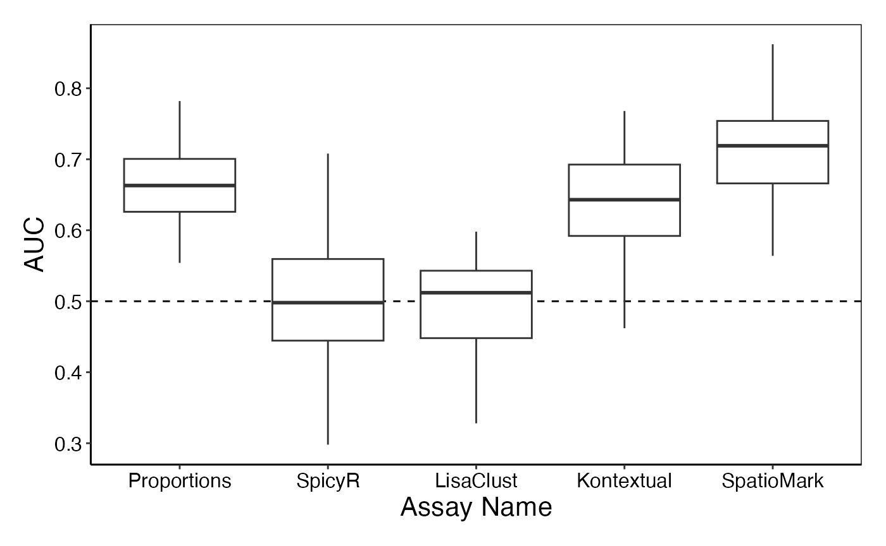Time for this code chunk to run: 3.73 seconds
Questions
- Run the following chunk of code, what is this plot telling us?
- Do different methods perform differently on different samples?
- Knowing this, what might we do to improve our model?
samplesMetricMap(cv) |>
plot()
 Time
for this code chunk to run: 0.4 seconds
Time
for this code chunk to run: 0.4 seconds
The following code chunk demonstrates how we might use information from multiple matrices to perform classification.
# DO NOT RUN
multiCV <- ClassifyR::crossValidate(
measurements = data,
outcome = outcome,
selectionMethod = "t-test",
classifier = "LASSOGLM",
nFolds = 5,
nFeatures = 20,
nRepeats = 50,
multiViewMethod = "merge",
nCores = nCores
)
plot = performancePlot(
multiCV,
metric = "AUC",
characteristicsList = list(x = "Assay Name"),
)Time for this code chunk to run: 0 seconds
knitr::include_graphics(system.file("images", "plot.png", package = "scdneySpatialBiocAsia2024")) Time
for this code chunk to run: 0.01 seconds
Time
for this code chunk to run: 0.01 seconds
#> R version 4.4.0 (2024-04-24)
#> Platform: aarch64-apple-darwin20
#> Running under: macOS 15.0.1
#>
#> Matrix products: default
#> BLAS: /Library/Frameworks/R.framework/Versions/4.4-arm64/Resources/lib/libRblas.0.dylib
#> LAPACK: /Library/Frameworks/R.framework/Versions/4.4-arm64/Resources/lib/libRlapack.dylib; LAPACK version 3.12.0
#>
#> locale:
#> [1] en_US.UTF-8/en_US.UTF-8/en_US.UTF-8/C/en_US.UTF-8/en_US.UTF-8
#>
#> time zone: Australia/Sydney
#> tzcode source: internal
#>
#> attached base packages:
#> [1] stats4 stats graphics grDevices utils datasets methods
#> [8] base
#>
#> other attached packages:
#> [1] scdneySpatialBiocAsia2024_2.0.1 knitr_1.48
#> [3] glmnet_4.1-8 Matrix_1.7-1
#> [5] scater_1.34.0 scuttle_1.15.4
#> [7] cytomapper_1.18.0 EBImage_4.48.0
#> [9] lubridate_1.9.3 forcats_1.0.0
#> [11] stringr_1.5.1 purrr_1.0.2
#> [13] readr_2.1.5 tibble_3.2.1
#> [15] tidyverse_2.0.0 ggplot2_3.5.1
#> [17] ttservice_0.4.1 tidyr_1.3.1
#> [19] dplyr_1.1.4 tidySingleCellExperiment_1.16.0
#> [21] ClassifyR_3.10.0 survival_3.7-0
#> [23] BiocParallel_1.40.0 MultiAssayExperiment_1.32.0
#> [25] generics_0.1.3 Statial_1.8.0
#> [27] spicyR_1.18.0 lisaClust_1.14.0
#> [29] FuseSOM_1.8.0 simpleSeg_1.8.0
#> [31] SpatialDatasets_1.4.0 SpatialExperiment_1.16.0
#> [33] SingleCellExperiment_1.28.0 SummarizedExperiment_1.36.0
#> [35] GenomicRanges_1.58.0 GenomeInfoDb_1.42.0
#> [37] IRanges_2.40.0 S4Vectors_0.44.0
#> [39] MatrixGenerics_1.18.0 matrixStats_1.4.1
#> [41] ExperimentHub_2.14.0 AnnotationHub_3.14.0
#> [43] BiocFileCache_2.14.0 dbplyr_2.5.0
#> [45] Biobase_2.66.0 BiocGenerics_0.52.0
#>
#> loaded via a namespace (and not attached):
#> [1] tiff_0.1-12 FCPS_1.3.4
#> [3] nnet_7.3-19 goftest_1.2-3
#> [5] Biostrings_2.74.0 HDF5Array_1.34.0
#> [7] TH.data_1.1-2 vctrs_0.6.5
#> [9] spatstat.random_3.3-2 digest_0.6.37
#> [11] png_0.1-8 shape_1.4.6.1
#> [13] proxy_0.4-27 ggrepel_0.9.6
#> [15] deldir_2.0-4 permute_0.9-7
#> [17] magick_2.8.5 MASS_7.3-61
#> [19] pkgdown_2.1.1 reshape2_1.4.4
#> [21] httpuv_1.6.15 foreach_1.5.2
#> [23] withr_3.0.2 ggfun_0.1.7
#> [25] psych_2.4.6.26 xfun_0.49
#> [27] ggpubr_0.6.0 ellipsis_0.3.2
#> [29] memoise_2.0.1 ggbeeswarm_0.7.2
#> [31] RProtoBufLib_2.18.0 diptest_0.77-1
#> [33] princurve_2.1.6 systemfonts_1.1.0
#> [35] tidytree_0.4.6 zoo_1.8-12
#> [37] GlobalOptions_0.1.2 ragg_1.3.3
#> [39] V8_6.0.0 DEoptimR_1.1-3
#> [41] prabclus_2.3-4 Formula_1.2-5
#> [43] KEGGREST_1.46.0 promises_1.3.0
#> [45] httr_1.4.7 rstatix_0.7.2
#> [47] rhdf5filters_1.18.0 fpc_2.2-13
#> [49] rhdf5_2.50.0 rstudioapi_0.17.1
#> [51] UCSC.utils_1.2.0 concaveman_1.1.0
#> [53] curl_6.0.0 zlibbioc_1.52.0
#> [55] ScaledMatrix_1.14.0 analogue_0.17-7
#> [57] polyclip_1.10-7 GenomeInfoDbData_1.2.13
#> [59] SparseArray_1.6.0 fftwtools_0.9-11
#> [61] doParallel_1.0.17 xtable_1.8-4
#> [63] desc_1.4.3 evaluate_1.0.1
#> [65] S4Arrays_1.6.0 hms_1.1.3
#> [67] irlba_2.3.5.1 colorspace_2.1-1
#> [69] filelock_1.0.3 spatstat.data_3.1-2
#> [71] flexmix_2.3-19 magrittr_2.0.3
#> [73] ggtree_3.14.0 later_1.3.2
#> [75] viridis_0.6.5 modeltools_0.2-23
#> [77] lattice_0.22-6 robustbase_0.99-4-1
#> [79] spatstat.geom_3.3-3 XML_3.99-0.17
#> [81] cowplot_1.1.3 RcppAnnoy_0.0.22
#> [83] ggupset_0.4.0 class_7.3-22
#> [85] svgPanZoom_0.3.4 pillar_1.9.0
#> [87] nlme_3.1-166 iterators_1.0.14
#> [89] compiler_4.4.0 beachmat_2.22.0
#> [91] stringi_1.8.4 tensor_1.5
#> [93] minqa_1.2.8 plyr_1.8.9
#> [95] treekoR_1.14.0 crayon_1.5.3
#> [97] abind_1.4-8 gridGraphics_0.5-1
#> [99] locfit_1.5-9.10 sp_2.1-4
#> [101] bit_4.5.0 terra_1.7-78
#> [103] sandwich_3.1-1 multcomp_1.4-26
#> [105] fastcluster_1.2.6 codetools_0.2-20
#> [107] textshaping_0.4.0 BiocSingular_1.22.0
#> [109] bslib_0.8.0 coop_0.6-3
#> [111] GetoptLong_1.0.5 plotly_4.10.4
#> [113] mime_0.12 splines_4.4.0
#> [115] circlize_0.4.16 Rcpp_1.0.13-1
#> [117] profileModel_0.6.1 blob_1.2.4
#> [119] utf8_1.2.4 clue_0.3-65
#> [121] BiocVersion_3.20.0 lme4_1.1-35.5
#> [123] fs_1.6.5 nnls_1.6
#> [125] ggsignif_0.6.4 ggplotify_0.1.2
#> [127] scam_1.2-17 statmod_1.5.0
#> [129] tzdb_0.4.0 svglite_2.1.3
#> [131] tweenr_2.0.3 pkgconfig_2.0.3
#> [133] pheatmap_1.0.12 tools_4.4.0
#> [135] cachem_1.1.0 RSQLite_2.3.7
#> [137] viridisLite_0.4.2 DBI_1.2.3
#> [139] numDeriv_2016.8-1.1 fastmap_1.2.0
#> [141] rmarkdown_2.29 scales_1.3.0
#> [143] grid_4.4.0 shinydashboard_0.7.2
#> [145] broom_1.0.7 sass_0.4.9
#> [147] patchwork_1.3.0 brglm_0.7.2
#> [149] BiocManager_1.30.25 carData_3.0-5
#> [151] farver_2.1.2 mgcv_1.9-1
#> [153] yaml_2.3.10 ggthemes_5.1.0
#> [155] cli_3.6.3 hopach_2.66.0
#> [157] lifecycle_1.0.4 uwot_0.2.2
#> [159] mvtnorm_1.3-2 kernlab_0.9-33
#> [161] backports_1.5.0 cytolib_2.18.0
#> [163] timechange_0.3.0 gtable_0.3.6
#> [165] rjson_0.2.23 ape_5.8
#> [167] parallel_4.4.0 limma_3.62.1
#> [169] edgeR_4.3.19 jsonlite_1.8.9
#> [171] bitops_1.0-9 bit64_4.5.2
#> [173] Rtsne_0.17 FlowSOM_2.14.0
#> [175] yulab.utils_0.1.7 vegan_2.6-8
#> [177] spatstat.utils_3.1-1 BiocNeighbors_2.0.0
#> [179] ranger_0.16.0 flowCore_2.17.0
#> [181] bdsmatrix_1.3-7 jquerylib_0.1.4
#> [183] highr_0.11 spatstat.univar_3.1-1
#> [185] lazyeval_0.2.2 ConsensusClusterPlus_1.70.0
#> [187] shiny_1.9.1 diffcyt_1.26.0
#> [189] htmltools_0.5.8.1 rappdirs_0.3.3
#> [191] glue_1.8.0 XVector_0.46.0
#> [193] RCurl_1.98-1.16 treeio_1.30.0
#> [195] mclust_6.1.1 mnormt_2.1.1
#> [197] coxme_2.2-22 jpeg_0.1-10
#> [199] gridExtra_2.3 boot_1.3-31
#> [201] igraph_2.1.1 R6_2.5.1
#> [203] ggiraph_0.8.10 labeling_0.4.3
#> [205] ggh4x_0.2.8 cluster_2.1.6
#> [207] Rhdf5lib_1.28.0 aplot_0.2.3
#> [209] nloptr_2.1.1 DelayedArray_0.32.0
#> [211] tidyselect_1.2.1 vipor_0.4.7
#> [213] ggforce_0.4.2 raster_3.6-30
#> [215] car_3.1-3 AnnotationDbi_1.68.0
#> [217] rsvd_1.0.5 munsell_0.5.1
#> [219] DataVisualizations_1.3.2 data.table_1.16.2
#> [221] ComplexHeatmap_2.22.0 htmlwidgets_1.6.4
#> [223] RColorBrewer_1.1-3 rlang_1.1.4
#> [225] spatstat.sparse_3.1-0 spatstat.explore_3.3-3
#> [227] colorRamps_2.3.4 uuid_1.2-1
#> [229] lmerTest_3.1-3 ggnewscale_0.5.0
#> [231] fansi_1.0.6 beeswarm_0.4.0Time for this code chunk to run: 0.1 seconds